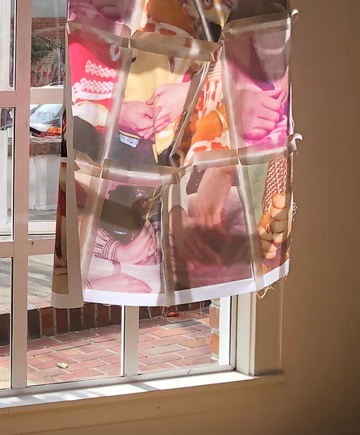
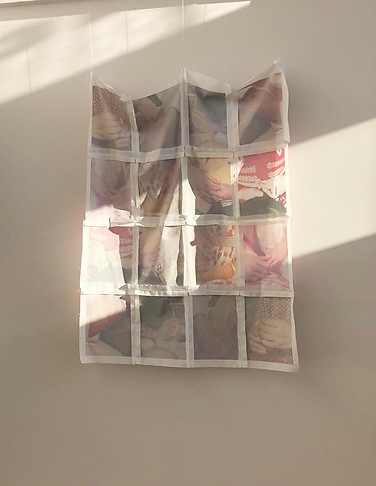
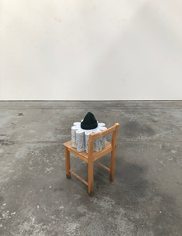
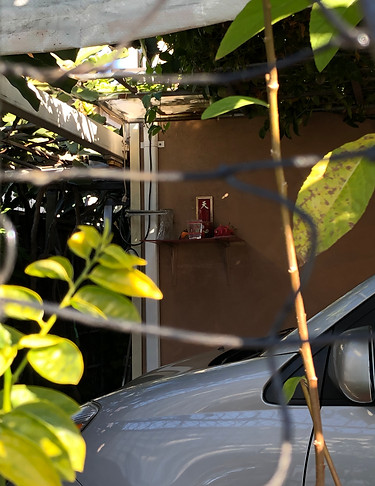

Loose Ends
A residency by Tracy Ren
August 2-30
In a month-long residency, artist Tracy Ren will be revisiting a handful of projects that began in the long, transitional and uncertain time of the 2020 global pandemic with hopes of bringing them to a state of completion. Through ceramics, textiles and print, they will be creating objects that engage with forms of nostalgia, with the spirals of growth that involve numerous returns and departures from self. An intuitive making process will be used, as they engage in a sort of familial, historical, spiritual, and cultural wayfinding, that rests on a foundation of knowledge developed over the past year.
In the spirit of exploration, they will also leave space for unfolding of the unknown and invite visits during each Saturday of the month at 1 PM, 3 PM, and 5 PM (e-mail the artist tracy.mary.ren@gmail.com to schedule) to bolster the making / discovery process. The residency will culminate in a brief exhibition which will be open to the public, details TBD.
  